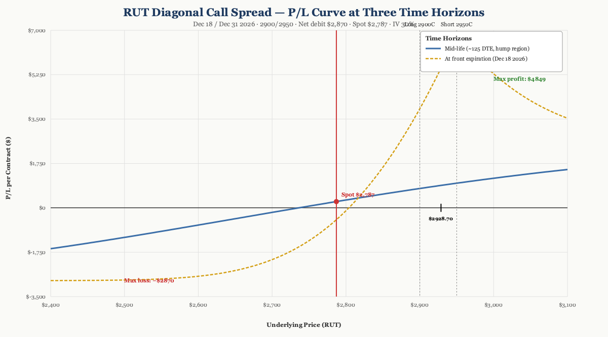
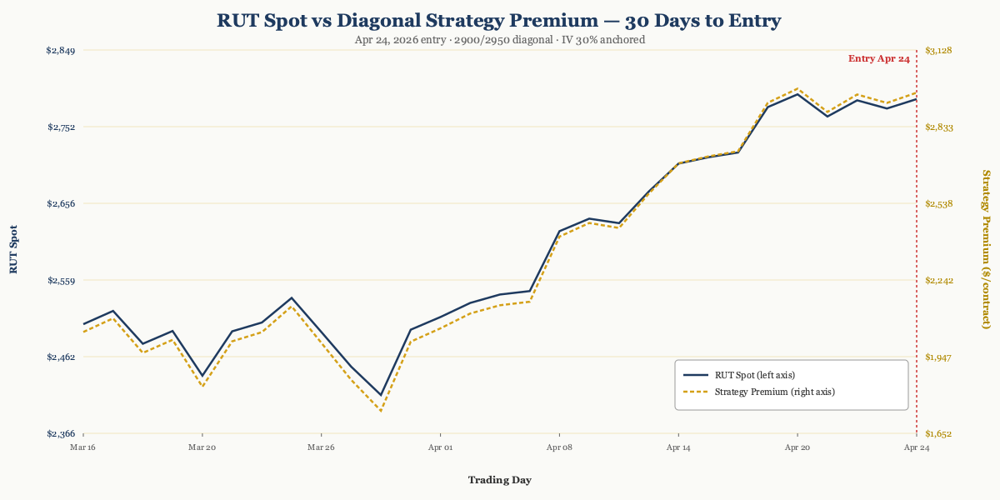

P/L Curve — Three Time Horizons

Max Profit
$4,849.08
intermediate time horizon
Max Loss
$2,870.00
defined = net debit
Net Debit
$28.70 per share
1 contract · $2,870
Spot / IV
$2,787.00
RUT @ entry · IV ~30%
Position Payoff at Three Time Horizons
The chart above shows the position's P/L as a function of RUT's price at three evaluation dates: at entry (the trade just opened), at mid-life (~125 DTE, halfway between entry and front expiration), and at front expiration (Dec 18, 2026 — when the short leg expires). Two curves are drawn — the mid-life curve (blue) and the at-expiration curve (gold dashed).
The mid-life curve is the more interesting of the two. At ~125 DTE, the long 2900C still has substantial time value remaining (about 137 days left), while the short 2950C has shed most of its time premium on the way to its Dec 18 expiry. That asymmetric time-value decay is what produces the "hump" in the blue curve — the position reaches its max profit of $4,849 at intermediate time horizons when the strike spread ($50) is captured plus a meaningful time-value differential.
The at-expiration curve is the diagonal's terminal shape: capped profit of $50 − debit = $21.30 per share ($2,130/contract) for any RUT close above $2,950 at Dec 18, and a loss zone from $0 up to the lower breakeven at $2,928.70. Below $2,900 the position is at max loss (both legs expire worthless or deep OTM).
Read the chart:
- Spot $2,787 is currently below the lower breakeven of $2,928.70 — the position is in a small loss at entry. RUT needs to rally ~5% by Dec 18 for the trade to print.
- The mid-life hump in the 2900-3000 zone is the "theta harvest window" — close to optimal to take profit there at intermediate time.
- The expiration curve is the fallback — capped $2,130 profit if RUT closes above $2,950 on Dec 18.
- Risk is fully defined: the max loss is the $2,870 debit, regardless of how low RUT goes.
Key levels (drawn on the chart):
- Lower breakeven $2,928.70 — RUT needs to rally ~10% from entry to wipe out the debit.
- Max profit plateau $4,849 — at intermediate time horizons if RUT is in the 2,900-3,000 zone.
- Max profit at expiration $2,130 — capped structure if RUT closes above $2,950 on Dec 18.
- Max loss $2,870 — if RUT closes below $2,900 at Dec 18 (both legs expire worthless or deep OTM).
How the Trade Has Moved Against the Underlying
The chart below compares RUT's spot price (left axis) to the strategy's premium (right axis) over the 30 trading days leading up to entry. The two lines track closely — RUT rallied from ~$2,503 in mid-March to $2,787 by April 24 (+11.3%), and the strategy premium expanded from $1,739 to $2,979 per contract over the same window.

The wider observation: this is a directionally bullish trade dressed up as a theta-harvest diagonal. The diagonal only pays its max profit if RUT is in the 2,900-3,000 zone at intermediate horizons. If RUT grinds sideways through Q3 2026 and closes Dec 18 above $2,950, the position prints its capped $2,130 at expiration. If RUT rallies hard and stays above $3,000 by mid-summer, the position gets closed early for the hump profit.
Greeks Snapshot (Black-Scholes, IV=30%, r=4.5%)
Greeks are computed at the entry spot ($2,787.00), with long 2900C Dec 31 (262 DTE) and short 2950C Dec 18 (249 DTE), IV surface anchored at 30%, risk-free rate 4.5%, no dividend yield. Numbers below are per-contract (×100 shares).
| Greek | Value (per-contract) | Interpretation |
|---|---|---|
| Delta (Δ) | +3.32 | Net slightly bullish. Position gains $3.32 per $1 RUT rally. |
| Gamma (Γ) | −0.001 | Near-zero gamma — long and short strikes offset. |
| Theta (Θ) | +$0.06 / day | Approximately flat at entry. Theta picks up as the front-month decays. |
| Vega (ν) | +$30.82 / 1% IV | Long vega. Position benefits from IV expansion. |
| Rho (ρ) | +$80.18 / 1% rate | Long rate sensitivity. Modest impact. |
Greeks are per-contract (×100 shares). Delta and Gamma are dimensionless; Theta in $/contract/day; Vega in $/contract per 1% IV change; Rho in $/contract per 1% rate change.
Per-leg breakdown (Black-Scholes, RUT $2,787.00, IV 30%, r 4.5%):
| Strike | Sign | DTE | Price | Delta | Gamma | Theta | Vega | Rho |
|---|---|---|---|---|---|---|---|---|
| 2900C Dec 31 | +1 | 262 | $213.68 | +0.472 | +0.00059 | −$0.65/day | +$9.00 | +$7.51 |
| 2950C Dec 18 | −1 | 249 | $187.93 | −0.439 | −0.00060 | +$0.65/day | −$8.70 | −$6.71 |
| Total | $28.70 debit | +0.033 | −0.00001 | +$0.001 | +$0.31 | +$0.80 |
Per-share Greeks sum to the per-contract values above (×100). The near-zero gamma and theta at entry are diagnostic of the diagonal structure — the two legs offset each other on those Greeks because the strikes are close. As DTE decays, theta becomes meaningful (negative on the long, positive on the short) and the position begins harvesting front-month premium.
Why This Structure
A long call diagonal with strikes at 2900/2950 is a defined-risk, defined-reward debit position. The structure combines:
- A long back-month 2900C (262 DTE) at the lower strike
- A short front-month 2950C (249 DTE) at the higher strike
The strike spread ($50) is wider than the extra 13 days of time value on the back-month leg, which is what makes this a debit diagonal rather than a credit. The structure profits in a wide body above $2,900 — capped above $3,000, with max profit at intermediate horizons (not at expiration).
The 249-262 DTE structure is the key choice. Long-dated diagonals give theta time to work in your favor on the short strike while letting the long strike retain most of its extrinsic value for the first 90-120 days. After that, theta accelerates on the front-month short and the structure begins to flatten toward its expiration payoff.
The 2900-strike long leg is "close enough to behave like a leveraged long" if RUT rallies — so if the index moves well above $2,950 before Dec 18, the position captures near-full upside above the short strike. The 2950-strike short leg caps the upside at $2,950 minus the $50 strike spread (i.e., $2,900 effective long strike), but it also caps the maximum loss at the debit paid.
Thesis
Why RUT, why now:
- Small-cap relative-value setup. RUT had been lagging the large-cap indices through Q1 2026 — the AI-led mega-cap rally was concentrated in the S&P 500, while small-caps traded sideways in the 2,400-2,800 range. April 24 was a tactical entry point after an 11.3% rally off the March 30 lows, with RUT breaking back into the consolidation zone near $2,620.
- Vol surface was bid. RUT IV was running ~30% — elevated for the index, reflecting tariff and macro uncertainty. Long-dated 8-month options let the trader buy time on a vol surface that was historically expensive on the front end but mean-reverting on the back end.
- Defined-risk bullish structure. A diagonal caps both profit and loss. The trader is expressing a bullish view (RUT > $2,900 by year-end) without taking on undefined risk like a naked long call would. The structure profits in a $100-wide zone ($2,900-$3,000), which is wide enough to give the position room to work even if RUT chops sideways.
Why this structure over alternatives:
- vs. Naked long 2950C Dec 31: A naked long would cost ~$190/contract (the long leg premium alone) and have undefined downside if RUT sells off. The diagonal costs $2,870 — more expensive than the naked long, but with theta harvest on the short and a capped loss profile.
- vs. Bull call spread (e.g., 2900/2950 same expiration): A same-expiration bull call spread would be cheaper (~$15-20 per share debit) but would cap profit at the $50 spread width, with no time-value differential to exploit. The diagonal's extra back-month leg adds the hump profit at intermediate horizons ($4,849 vs $2,130 at expiration).
- vs. Calendar (same strike, different expirations): A calendar at strike 2900 (long Dec 31, short Dec 18) would have similar theta dynamics but would be entirely OTM-bullish. The diagonal adds a 50-point strike spread that creates a defined profit zone and a clean breakeven.
Why not a credit diagonal: A credit diagonal (long higher strike, short lower strike) at 2900/2950 would have been possible — the front-month 2900C is more expensive than the back-month 2950C because the strike spread outweighs the time-value differential. But a credit diagonal profits from time decay only, not from direction. The thesis here was directional (bullish on small-caps), so the debit diagonal was the right structure.
Risk
| Risk | Magnitude | Mitigation |
|---|---|---|
| RUT below 2,900 at Dec 18 | Max loss = $2,870 (debit) | Defined risk. Stop at 2× debit ($5,740) if position moves adversely. |
| RUT above 3,000 by mid-summer | Profit capped near max ($4,849) | Take profit on the hump. Don't hold into theta decay on the long leg. |
| IV crush on the long 2900C | Loss of extrinsic value over time | Expected — that's why the front-month short was sold. Theta on the short > theta on the long until ~60 DTE. |
| Early assignment on short 2950C | Possible if RUT dividends declared or ex-date near | RUT is an index — no dividends. Risk only on settlement if deep ITM at Dec 18. |
| RUT sells off >20% to 2,100 | Both legs deep OTM, full loss of debit | Acceptable — defined risk. Position size within playbook 0.25% NLV cap. |
Intraday Setup (entry)
RUT opened at $2,747.69 on April 24, 2026, with implied volatility around 30% — elevated even for the index, which routinely trades in the 18-25% IV range in calm conditions. The April tariff announcement cycle had pushed realized vol higher, and the 30% IV reflected ongoing uncertainty.
The setup had been on the watchlist since late March. RUT had rallied 11.3% off the March 30 lows ($2,414 → $2,787) over 4 weeks and was testing the upper end of the Q1 trading range near $2,800. The trade thesis: small-cap relative-value compression was due for a mean-reversion move higher, and a defined-risk long diagonal gave exposure to a sustained 5-10% RUT rally by year-end without taking on undefined risk.
Two separate legs, filled as limit orders mid-day. The long 2900C Dec 31 (262 DTE, deep ITM) at ~$213 per share and the short 2950C Dec 18 (249 DTE, OTM) at ~$188 per share established the diagonal. Net debit of $28.70 per share across a $50 strike spread — defined risk of $2,870 per contract, with the option to capture the mid-life theta hump if RUT moves into the 2,900-3,000 zone over the summer.
The position was entered as a single-unit trade (1 diagonal, 2 legs), sized within the playbook's 0.25% NLV per-trade cap.
Management Plan
- Open through month 3 (Jul 2026): Do nothing. Theta on the short leg is positive; the long leg is holding time value. Position is "in the zone" — let it work.
- Month 3-4 (Aug-Sep 2026): Begin watching delta. If RUT is in the 2,900-3,000 zone, the position is approaching max profit and the front-month theta is accelerating.
- Month 4-5 (Oct-Nov 2026): Take 50% of max profit OR close before 30 DTE if any leg is far OTM (the short will be near-zero).
- Stop loss: 2× debit paid ($5,740), OR close at 30 DTE if the trade has not entered the profit zone. Never let a long diagonal go to expiration with theta accelerating on both legs.
Status
| Date | RUT Price | Position Value | P&L | Notes |
|---|---|---|---|---|
| 2026-04-24 (entry) | $2,787.00 | $2,870 debit | — | Opened. IV ~30%. Long 2900C Dec 31 + short 2950C Dec 18. |
| 2026-07-14 (current) | $2,964.76 | ~$3,700 | ~+$830 (+29%) | RUT has rallied 6.4% in 81 days. Position is solidly in profit. |
RUT rallied from $2,787 at entry to $2,965 as of July 14 — a 6.4% move that has put the trade into profit territory well ahead of the Dec 18 front expiration. The long 2900C Dec 31 has $64.76 of intrinsic value plus remaining time premium; the short 2950C Dec 18 is slightly ITM ($14.76 intrinsic) with ~5 months of time value left.
Current position value (Black-Scholes, IV 22-30%, r=4.5%):
- Long 2900C Dec 31 (170 DTE remaining) at S=$2,964.76: ~$228-304 per share (intrinsic + time value)
- Short 2950C Dec 18 (157 DTE remaining) at S=$2,964.76: ~$191-267 per share (intrinsic + time value)
- Position value: ~$36-37 per share = $3,670-3,730 per contract
- P/L: +$800-865 per contract (+28-30% of debit)
The trade is performing as designed — RUT has rallied past the diagonal's $2,929 lower breakeven and the position is showing a meaningful gain. The hump profit ($4,849) is achievable if RUT continues into the $2,900-3,000 zone at intermediate time horizons (Aug-Oct 2026) and is closed then. Management decision pending: take 50% profit at the hump region, or hold for full max profit if RUT extends higher into Q4.
Lessons
What worked: Choosing the long-lower-strike-back-month / short-higher-strike-front-month structure captured both the directional bullish view AND the time-value differential. The 50-point strike spread was wide enough to create a meaningful profit zone (2,900-3,000) without making the debit excessive.
What I'd do differently: The 2950C short was sold at ~30% IV — well above the typical 18-22% RUT IV range. If IV had mean-reverted to 20% before Dec 18, the short leg would have lost less time value (good for the position), but the long leg would also have lost less time value (neutral). The bigger concern is the opposite scenario: if IV expands further on a tariff escalation, both legs gain, but the position's long vega ($30.82/contract per 1% IV) means the position would benefit modestly. Net: IV direction matters less than spot direction here.
For the playbook: The 249-262 DTE diagonal structure is a useful addition to the standard playbook. It expresses a directional bullish view with defined risk and has the hump profit potential at intermediate horizons — something a same-expiration bull call spread can't offer. The key tradeoff is the higher debit ($2,870 vs ~$1,500 for a same-expiration 2900/2950 spread) in exchange for the additional upside at intermediate times.
Vol surface behavior: RUT IV at entry was ~30%, elevated for the index. As of July 14, RUT IV has likely mean-reverted somewhat toward the 22-25% range as the tariff-shock premium has faded. This has compressed both legs' time value roughly equally, with the net effect being small (the time-value differential between the legs is what matters for the diagonal's hump).
Theta math: At entry, theta is approximately flat — the two legs offset. By month 3-4, the short leg's theta will dominate as it approaches 60-90 DTE, harvesting premium rapidly. The position will see meaningful daily theta gains in the Aug-Oct window. By 30 DTE on the short (mid-November), theta harvest is at its peak.
Build and track this trade at Optionstrat ↗.